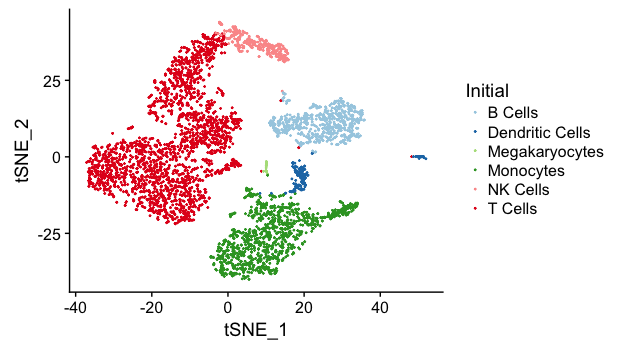
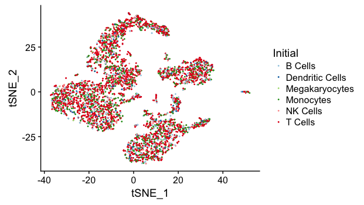
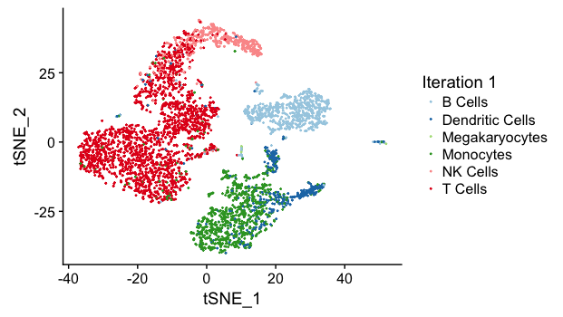

Clustering Single Cell RNA-Seq Data Using Reference Bulk RNA-Seq Data
Source:vignettes/refine_cluster.Rmd
refine_cluster.RmdMotivation
Clustering is a crucial step in single cell RNA-seq (scRNA-seq) data analysis. Most popular methods examine the inherent structure of the scRNA-seq dataset, without making use of the biological information of underlying cell types. Consequently, optimal determination of the number of clusters and interpretation of each cluster becomes a challenging problem. Here, we implement a clustering function, refine_clusters, which accounts for both the proximity of single cell expression levels within a cluster and the estabilished cell type information by comparing the single cell data to the reference bulk RNA-seq data of pre-defined cell types.
Theory
Let the expression profile of a single cell be \(\vec{x\ }\) where each element refers to the expression level (counts/reads) of a gene. Assume the scRNA-seq data is to be clustered into \(M\) clusters, and the first \(N\) clusters have reference bulk RNA-seq data of pre-defined cells. Here, we require \(M\geq N\). Let \(\vec{B_i}\) be the expression profile of the bulk data for \(i\)-th cluster, and we require \(\vec{x\ }\) and \(\vec{B_i}\) be organized in the same gene order.
The function refine_clusters defines the probability of a cell \(\vec{x\ }\) being assigned to cluster \(i\) as a weighted product of the probability that \(\vec{x\ }\) is similar to \(\vec{B_i}\) and the probability that \(\vec{x\ }\) is proximal to the centroid of clsuter \(i\) (with mean \(\vec{\mu_i}\) and standard deviation \(\vec{\sigma_i}\)).
The former probability is formulated as \[P(\vec{x\ }; \vec{B_i}) \propto \exp\{\epsilon S(\vec{x\ }, \vec{B_i})\}\] where \(S(\vec{x\ }, \vec{B_i})\) represents the similarity score between \(\vec{x\ }\) and \(\vec{B_i}\). One example of similarity score is the correlation computed by run_cor function. For clusters without reference data, we assign a default similarity score. \(\epsilon\) is a user-defined weighting parameter.
The latter probability is modeled as a Gaussian distribution, i.e. \[P(\vec{x\ }; \vec{\mu_i}, \vec{\sigma_i}) \sim N(\vec{\mu_i}, \mathbf{\Sigma}^{(i)})\] where the covariance matrix \(\mathbf{\Sigma}^{(i)}\) is a diagonal matrix where each element diagonal represents the variance of a gene’s expression within the cluster \(i\) (\(\Sigma^{(i)}_{j,j} = \sigma_{i,j}^2\)).
The overall probability is then expressed as \[P(\vec{x\ }; \mathrm{Cluster}\ i) = P(\vec{x\ }; \vec{B_i})^\lambda P(\vec{x\ }; \vec{\mu_i}, \vec{\sigma_i})^{1-\lambda}\] where \(\lambda\) is a user-defined input parameter.
For each single cell \(\vec{x\ }\), the function refine_clusters computes the probability of it being assigned to each cluster, and assigns the cell to the cluster with highest probability. After assigning all single cells, a new clustering is formed and the function repeats the whole process until assignment is converged.
The algorithm works as follows
- Input: scRNA-seq expression matrix, bulk RNA-seq expression matrix, initial cluster assignment
- Output: Optimal cluster assignment
- For each single cell (\(\vec{x\ }\)) and each bulk RNA-seq data (\(\vec{B_i}\)), compute the similarity score \(S(\vec{x\ }, \vec{B_i})\). For clusters without reference bulk data, a default similarity score is used.
- For each cluster \(i\), compute its centroid \(\vec{\mu_i}\) and \(\vec{\sigma_i}\).
- For each cell (\(\vec{x\ }\)) and each cluster \(i\), compute the probability of assignment \(P(\vec{x\ }; \mathrm{Cluster}\ i)\), and assign the cell to the cluster with highest probability.
- Repeat Step 2-3 until convergence.
Example
Dataset
We make use of the pbmc4k_matrix, pbmc4k_meta and pbmc_bulk_matrix dataset. To satisfy the requirement of the function, we define six clusters (Monocytes, B Cells, T Cells, Dendritic Cells, NK Cells and Megakaryocytes) and re-assign each cell to one cluster based on its previous label. We further extract 5 samples (Monocytes, B Cells, T Cells, Dendritic Cells, NK Cells) from the bulk dataset to represent the reference expression profile for the first five clusters. No reference data for Megakaryocytes is provided.
data("pbmc4k_meta"); data("pbmc4k_matrix"); data("pbmc_bulk_matrix"); data("pbmc4k_markers_M3Drop")
# construct sc_cluster
gene_constraints <- list(rownames(pbmc4k_matrix), rownames(pbmc_bulk_matrix), pbmc4k_markers_M3Drop[,'Gene']);
sc_expr <- select_gene_subset(pbmc4k_matrix, gene_constraints);
bulk_expr <- select_gene_subset(pbmc_bulk_matrix, gene_constraints);
sc_tsne_coord <- pbmc4k_meta[,c('tSNE_1', 'tSNE_2')];
sc_cluster <- rep(0, ncol(sc_expr));
sc_cluster[which(pbmc4k_meta[,'classified']=="CD14+ Monocytes")] <- 1; # 1 monocytes
sc_cluster[which(pbmc4k_meta[,'classified']=="FCGR3A+ Monocytes")] <- 1;
sc_cluster[which(pbmc4k_meta[,'classified']=="B cells")] <- 2; # 2 B cells
sc_cluster[which(pbmc4k_meta[,'classified']=="CD4 T cells, 1")] <- 3; # 3 T cells
sc_cluster[which(pbmc4k_meta[,'classified']=="CD4 T cells, 2")] <- 3;
sc_cluster[which(pbmc4k_meta[,'classified']=="CD8 T cells")] <- 3;
sc_cluster[which(pbmc4k_meta[,'classified']=="Dendritic cells, 1")] <- 4; # 4 DC
sc_cluster[which(pbmc4k_meta[,'classified']=="Dendritic Cells, 2?")] <- 4;
sc_cluster[which(pbmc4k_meta[,'classified']=="NK cells")] <- 5; # 5 NK cells
sc_cluster[which(pbmc4k_meta[,'classified']=="Megakaryocytes")] <- 6; # 6 megakaryocytes (not found)
bulk_expr <- bulk_expr[, c(3, 1, 7, 2, 5)]
colnames(bulk_expr) <- c("Monocytes", "B Cells", "T Cells", "Dendritic Cells", "NK Cells");
cluster_names <- c("Monocytes", "B Cells", "T Cells", "Dendritic Cells", "NK Cells", "Megakaryocytes");Execution
To demonstrate the power of refine_clusters, we randomize the cluster assignment and use the function to re-assign clusters.
res <- refine_clusters(sc_expr, sample(sc_cluster, length(sc_cluster)), bulk_expr, lambda=0.5, epsilon=1, if_compute_sigma=TRUE, num_iteration=20, default_similiarity=-1, disagreement_freq=0.01, if_plot=TRUE, tsne_coord=sc_tsne_coord, cluster_names=cluster_names, compute_method=corr_coef);For this execution, we put equal weights on the two probabilities and we allow the algorithm to run at most 20 iterations. Clustering is considered converged if less than 1% of cells are assigned with new labels during one iteration.
To evaluate the performance of the algorithm, we visualize the clusters on the t-SNE plot. As a reference, the ground truth is 
Before clustering, since assignment is randomized, the clusters are well-mixed on the t-SNE plot. 
The function shows rapid convergence after 1 iteration, 
and clustering is stabilized after 10 iterations.